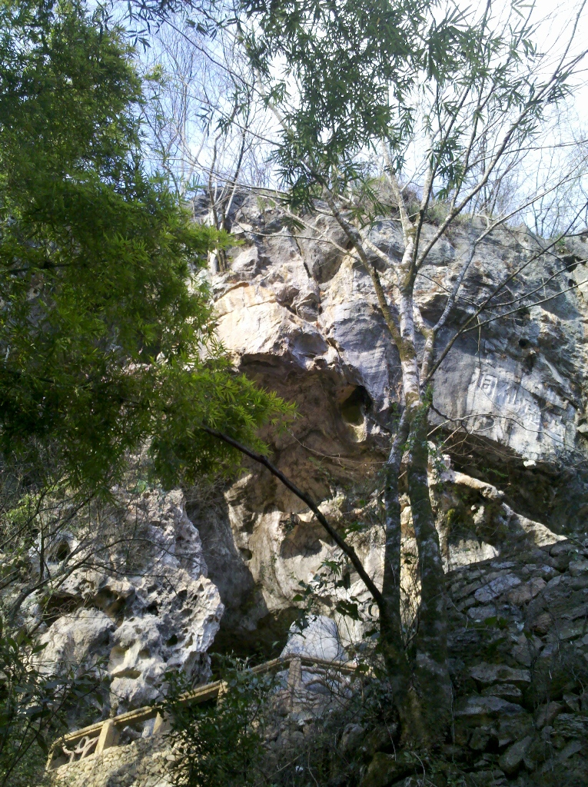
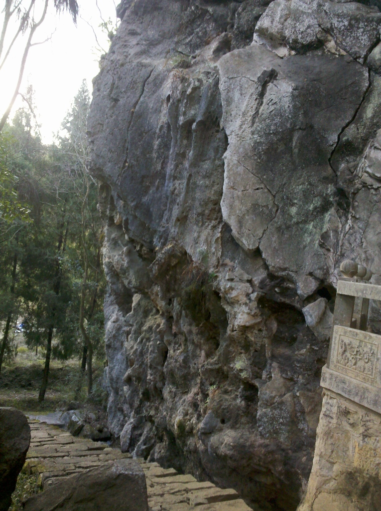
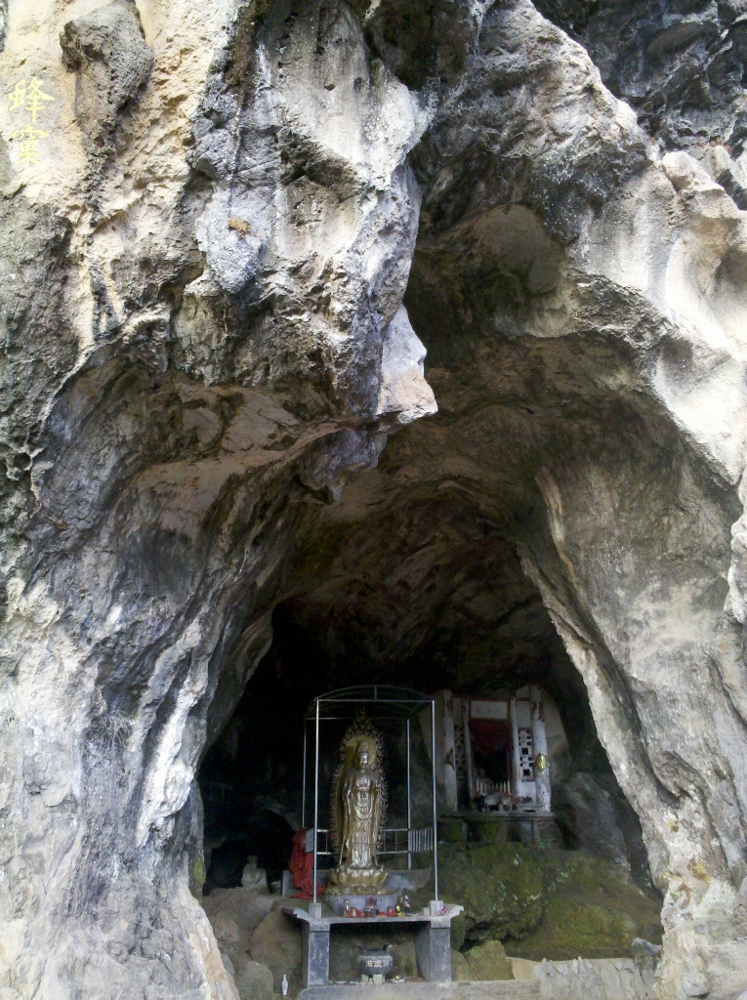
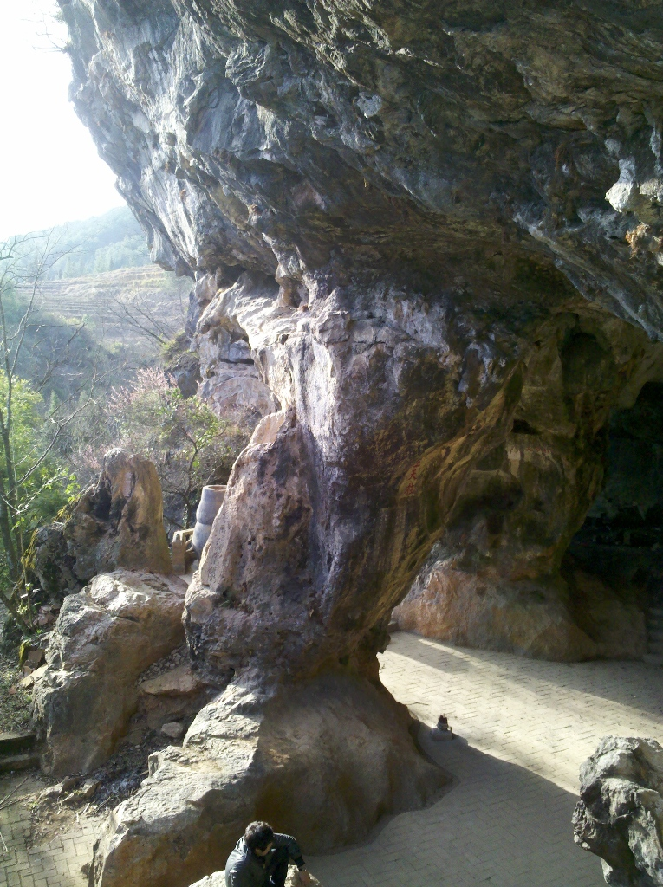
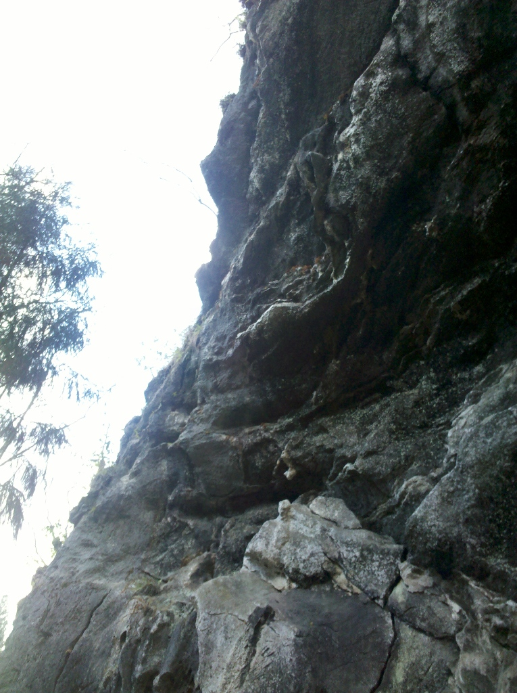
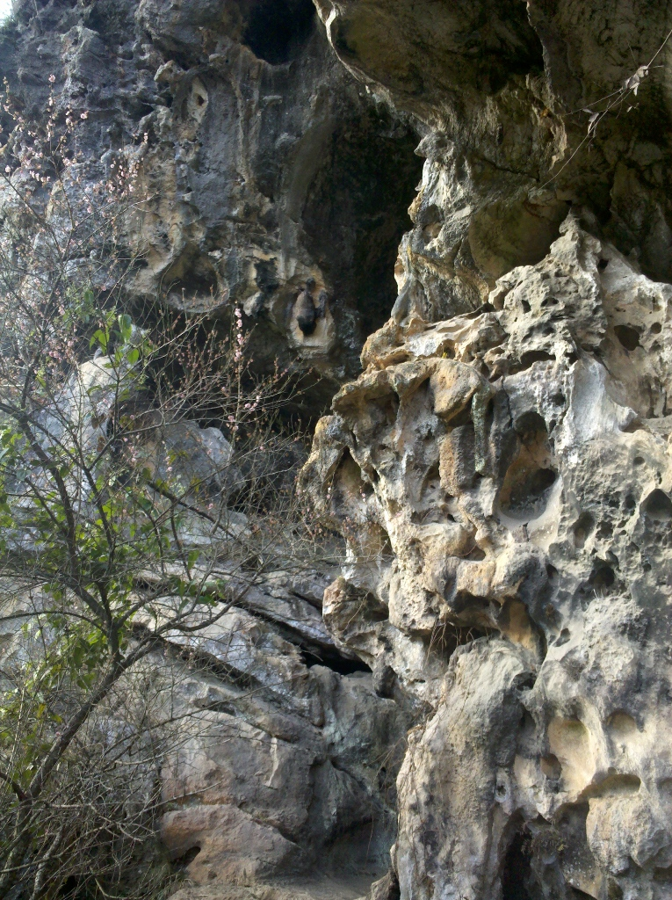
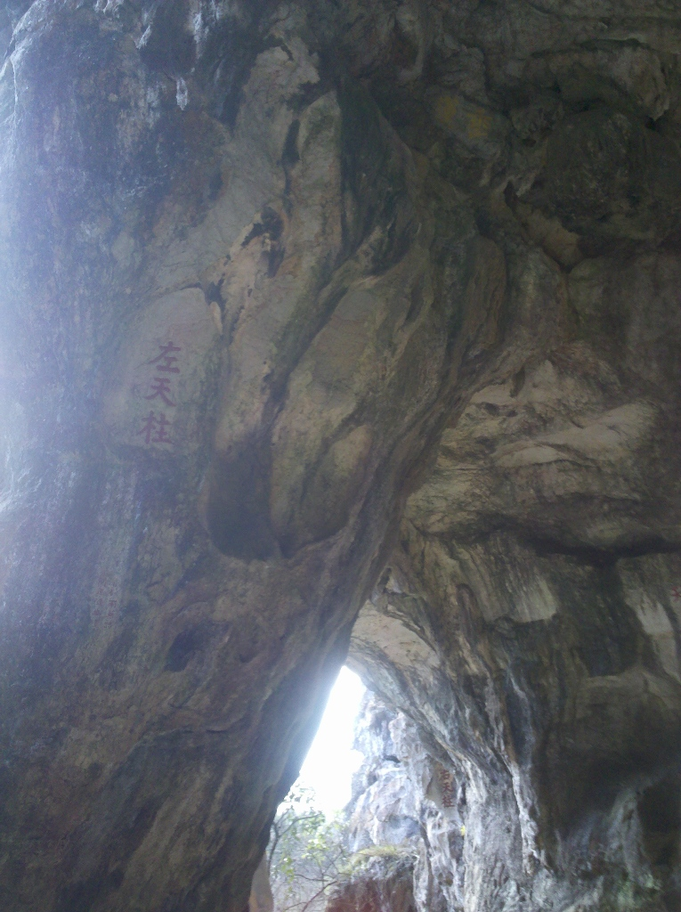
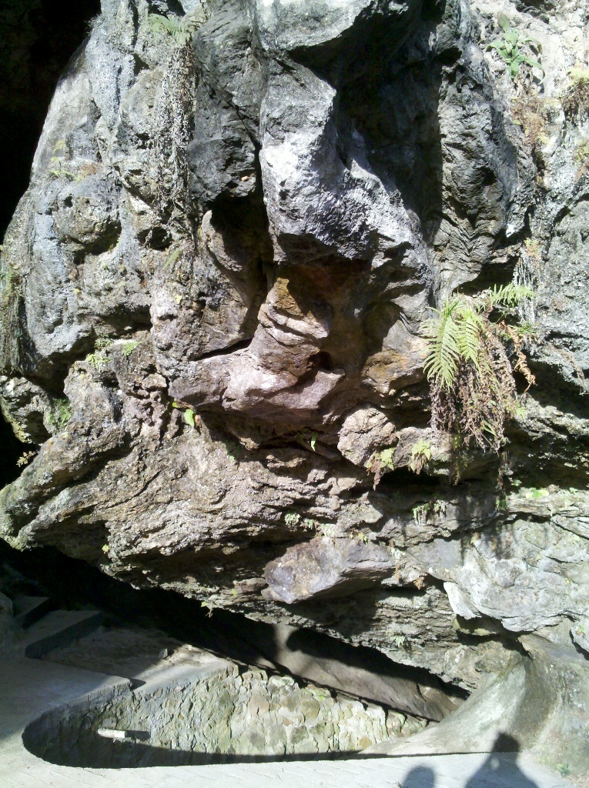
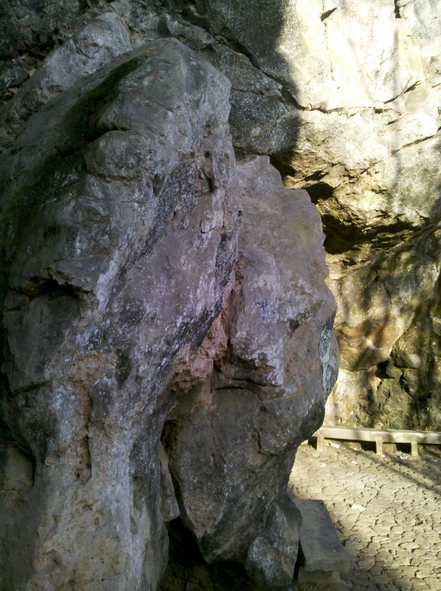
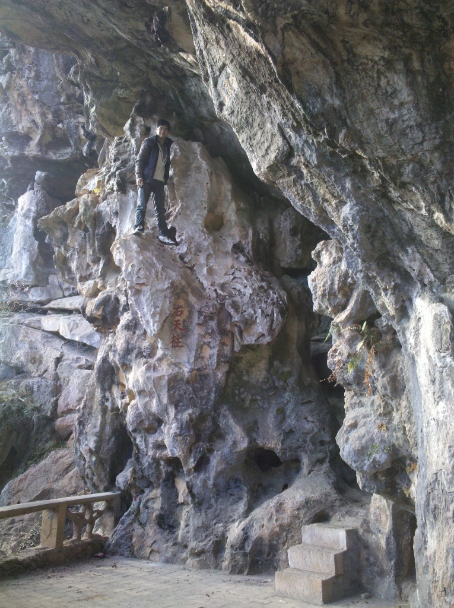

发信人: ioutdoor (爱户外，爱outdoor), 信区: outdoor
标 题: 野外小攀@home~~~
发信站: 饮水思源 (2013年02月05日17:47:52 星期二)
惊喜地发现家里周围的小土包里面也是有石头山的~
明溪玉虚洞，一个已经废弃的景区，小情侣们不远万里的约会圣地。。。今天跟着堂弟骑
着个摩托车兜风，到这转了一圈。没有岩鞋、垫子和绳子，只是简单地尝试了几条线，周
围还有很多岩壁，都感觉可行~
 screen.width - 200){this.width = screen.width - 200}">
 screen.width - 200){this.width = screen.width - 200}">
 screen.width - 200){this.width = screen.width - 200}">
 screen.width - 200){this.width = screen.width - 200}">
 screen.width - 200){this.width = screen.width - 200}">
 screen.width - 200){this.width = screen.width - 200}">
 screen.width - 200){this.width = screen.width - 200}">
这块石头被景区取名为鼋石，确是有点像乌龟伸出的头，从龟底部爬到龟背部，应该是可
行的，手点挺多的~
 screen.width - 200){this.width = screen.width - 200}">
这块石头是我尝试的几条线之一，三米左右高吧，看起来简单，实际爬起来还颇费周折，
得平移过去再向上，也可能是鞋不好，岩壁不够干净的原因吧。。。
 screen.width - 200){this.width = screen.width - 200}">
最后这张，是我第一条爬的，虽然高了些，但是手点超大，爬起来相当爽~
 screen.width - 200){this.width = screen.width - 200}">
--
※ 来源:·饮水思源 bbs.sjtu.edu.cn·[FROM: 220.162.191.179]
|